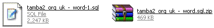

Создание резервной копии базы данных
Languages: English • 日本語 Русский • (Add your language)
Настоятельно рекомендуется архивировать базу данных на регулярной основе и перед обновлением блога.
В этом случае становится возможным восстановить базу данных из резервной копии, если что-то пойдёт не так.
Contents
При помощи phpMyAdmin
phpMyAdmin — это программа для выполнения операций с базой данных.
- Войдите в интерфейс phpMyAdmin на вашем сервере
- На главной странице выберите 'Базы данных' ('Databases')
- Щелкните по имени вашей базы данных - точнее, базы данных вашего WordPress, если у вас их несколько.
- Следующий экран покажет вам все таблицы внутри базы.
Проигнорируйте это и нажмите на закладку 'Экспорт' ('Export') вверху экрана. - Обратите внимание на левую верхнюю часть секции 'Экспорт' ('Export'). Все таблицы, которые вы выбрали из вашей базы, отображаются в этой секции.
- Если у вас есть другие программы, использующие базу, тогда выберите только те таблицы, которые относятся к вашей установке wordpress'a. Их названия начинаются с "wp_" либо как-то еще 'префикс_таблицы' ('table_prefix') которые вы задали в файле 'wp-config.php'.
- Если же у вас установлен только блог WordPress, то оставьте всё как есть (либо нажмите 'Выбрать все' ('Select All') если вы изменили свой выбор)
- Обязательно убедитесь, что выбрано 'SQL'!
- Секция SQL Tick the following boxes:
- 'Structure'
- 'Add DROP TABLE'
- 'Add AUTO_INCREMENT' and
- 'Enclose table and field names with backquotes'
- Секция DATA Leave the boxes inside this section unticked, but make sure to keep the checkbox next to the "DATA" heading checked.
- Tick the 'Save as file' option, and leave the template name as is.
- Now click 'Go' and you should be prompted for a file to download. Save the file to your computer.
Depending on the database size, this may take a few moments. - You have now backed up your database.


{kind=link}
{kind=link}
{kind=link}
If you wanted, you could download a backup in each of the compression formats. Your choice. For example: None and "zipped": 
Remember - you have NOT backed up the files and folders - such as images - but all your posts and comments are now safe.{kind=link}
Используя команды MySQL напрямую
phpMyAdmin не справляется с большими базами данных, в этом случае поможет использование MySQL напрямую.
1. Перейдите в директорию, в которую вы хотите сохранить бэкап:
user@linux:~> cd files/blog
2. Используйте команду mysqldump для выгрузки всех таблиц базы данных. Чтобы выгрузить только некоторые таблицы из базы данных, укажите их имена в конце команды как (имя_таблицы имя_таблицы имя_таблицы), только не вводите круглые скобки ( ). (За более подробным описанием, обратитесь к man mysqldump.):
user@linux:~/files/blog> mysqldump --add-drop-table -h mysqlhostserver -u mysqlusername -p databasename (tablename tablename tablename) | bzip2 -c > blog.bak.sql.bz2 Enter password: (введите ваш пароль mysql) user@linux~/files/blog>
Пример: mysqldump --add-drop-table -h db01.example.net -u dbocodex -p dbwp | bzip2 -c > blog.bak.sql.bz2 Enter password: my-password user@linux~/files/blog>
Команда bzip2 -c после | (pipe, конвейер) означает, что бэкап будет сжат на лету, а > blog.bak.sql.bz2 отсылает вывод bzip в файл под названием blog.bak.sql.bz2. То же самое можно сделать с помощью двух последовательно выполненных команд:
mysqldump --add-drop-table -h db01.example.net -u dbocodex -p dbwp > blog.bak.sql bzip2 blog.bak.sql
С помощью MySQL Administrator
MySQL Administrator is a program for performing administrative operations, such as configuring your MySQL server, monitoring its status and performance, starting and stopping it, managing users and connections, performing backups, restoring backups and a number of other administrative tasks. You can perform most of those tasks using a command line interface such as that provided by mysqladmin or mysql, but MySQL Administrator is advantageous in the following respects:
- Its graphical user interface makes it more intuitive to use.
- It provides a better overview of the settings that are crucial for the performance, reliability, and security of your MySQL servers.
- It displays performance indicators graphically, thus making it easier to determine and tune server settings.
- It is available for Linux, Windows and MacOS X, and allows a remote client to backup the database across platforms. As long as you have access to the MySQL databases on the remote server, you can backup your data to wherever you have write access.
- There is no limit to the size of the database to be backed up as there is with phpMyAdmin.
MySQL Administrator is designed to work with MySQL servers versions 4.0 and above.
Getting MySQL Admin
MySQL Admin may be downloaded from the MySQL.Com site. Installation binaries and documentation may also be found there.
Backing Up the Database
This assumes you have already installed MySQL Admin and set it up so that you can login to the MySQL Database Server either locally or remotely. Refer to the documentation that comes with the installation package of MySQL Admin for your platform for installation instructions.
1. Open the MySQL Admin client and login as you had previously set up to do.
2. From the icon menu on the left hand side of the client window select Backup.
3. If you have not already created a Backup Project, do this now by clicking on the "New Project" button at the lower part of the window and type in a name for the Backup Project where prompted.
4. Select one or more databases that you want to Backup (in the MySQL Admin client these are called a "Schema" (pl. "Schemata")). Add them to the Backup Content window on the right using the right-pointing arrow button.
5. When you have selected the Schema(ta), you can save the Backup Project. Or you may simply choose to Backup Now using the button on the lower right of the window.
6. A dialogue will come up asking you where to put the Backup. Enter the pathname or browse to the location using the dialogue.
7. Assuming all is correct (and you have write permissions in the directory to which you are writing the Backup), the backup will complete shortly.
Восстановление из резервной копии
1. Open the MySQL Admin client and login as you had previously set up to do.
2. From the icon menu on the left hand side of the client window select Restore.
3. Click the "Open Backup File" button on the lower right of the window.
4. Type in or browse to the Schema(ta) backup file and select. Click "Open".
5. The Target Schema(ta) will most likely be the "Original Location", or you may choose an alternate location using the drop-down menu.
6. Click the "Start Restore" button on the lower right of the window. The database restore will commence.
Используя плагин WordPress Database Backup
Austin Matzko поддерживает плагин originally created by Skippy под названием WordPress Database Backup. Он входил в состав WordPress 2.0, но с версии 2.1 больше не поставляется.
Установка плагина
- If you do download the plugin, follow the directions in the wp-db-backup.txt file to install the plugin correctly.
Активация плагина
- Make sure the wp-content folder is writeable by your server (change its CHMOD)
- Go to your Administration > Plugins > Plugins Panel and activate the plug-in
Резервное копирование
- Navigate to Administration > Manage > Backup Panel
- Select any tables, in addition to the core WordPress tables, that should be backed-up. Select the Backup Options; the backup can be saved on the server, downloaded, or emailed. Finally, click on the Backup button to actually perform the backup. If you have installed the WP-Cron plugin, you can schedule daily backups.
Восстановление данных
The file created is a standard SQL file. If you want information about how to upload that file, look at Restoring Your Database From Backup.
Используя CocoaMySQL
CocoaMySQL is a free MySQL client for Mac OS X.
Open your database from CocoaMySQL and choose File → Export → MySQL file…, and check these options:
- Add drop table
- Add create table
- Add table content
{kind=link}